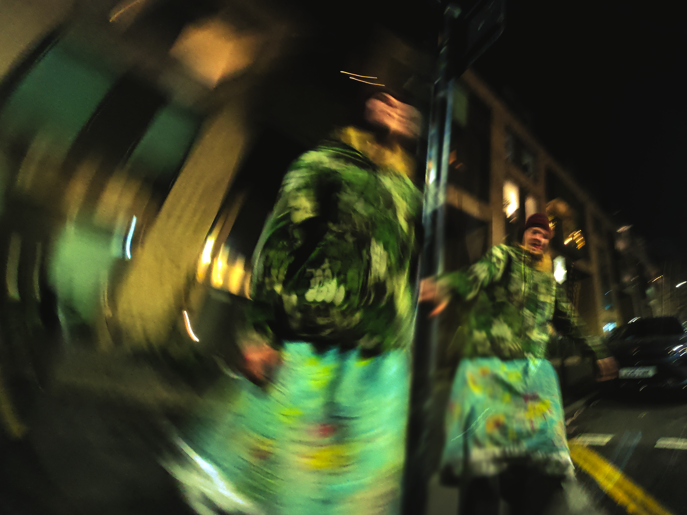
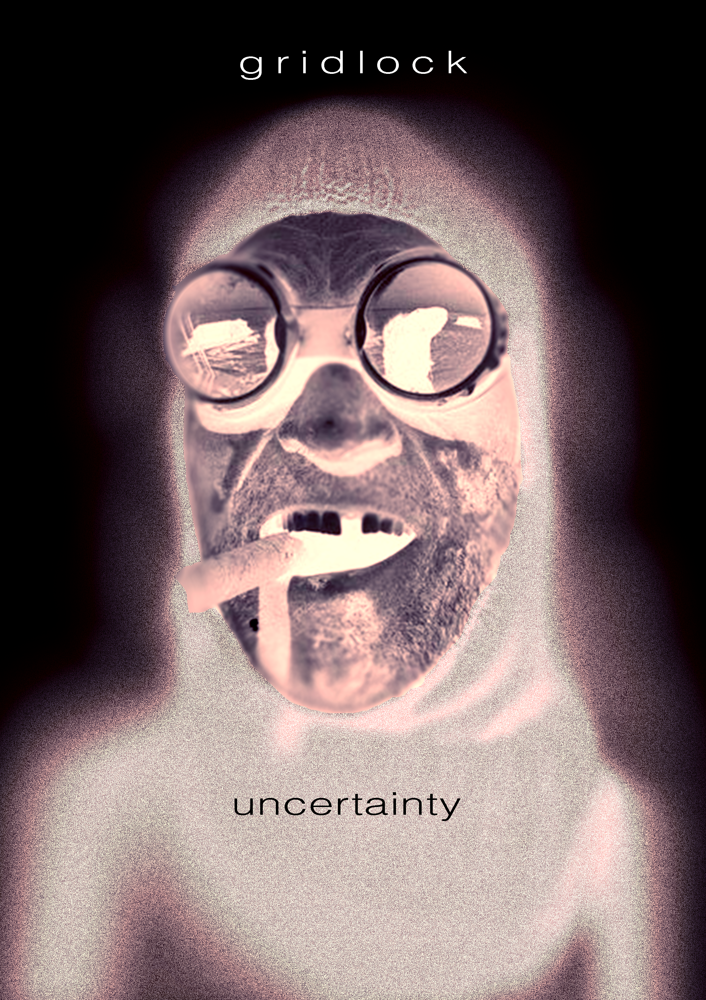
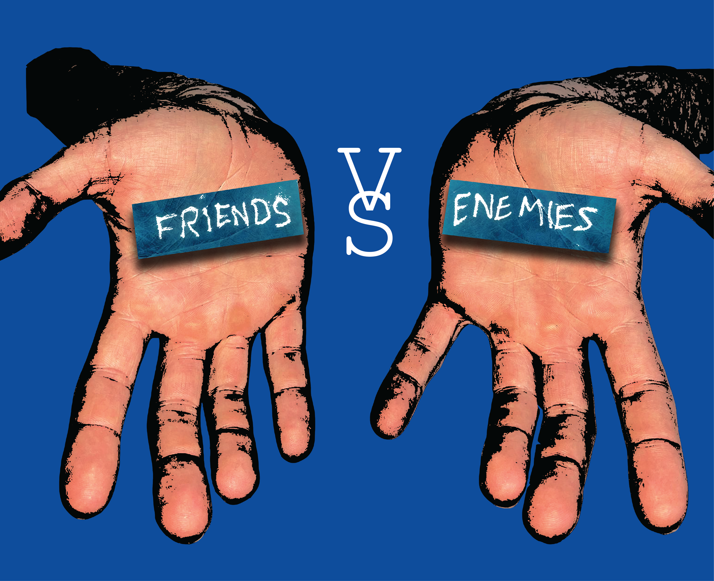
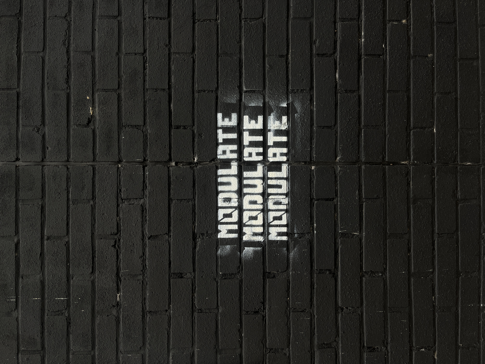
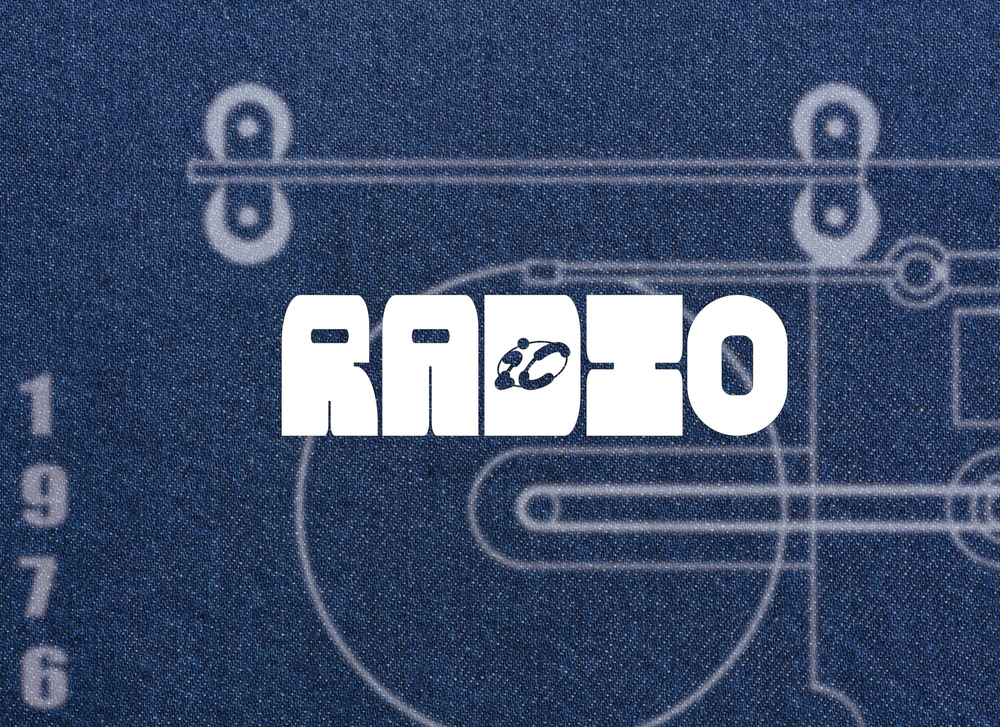
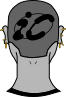
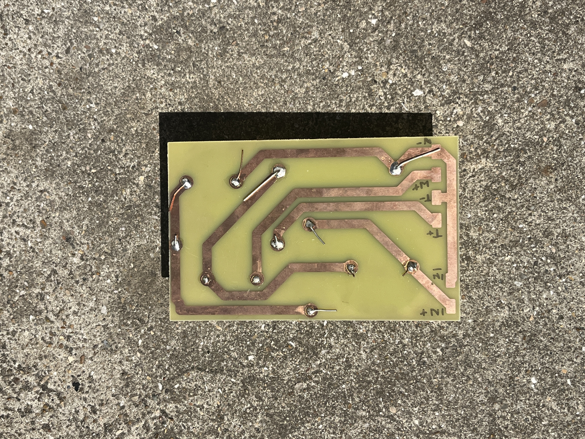
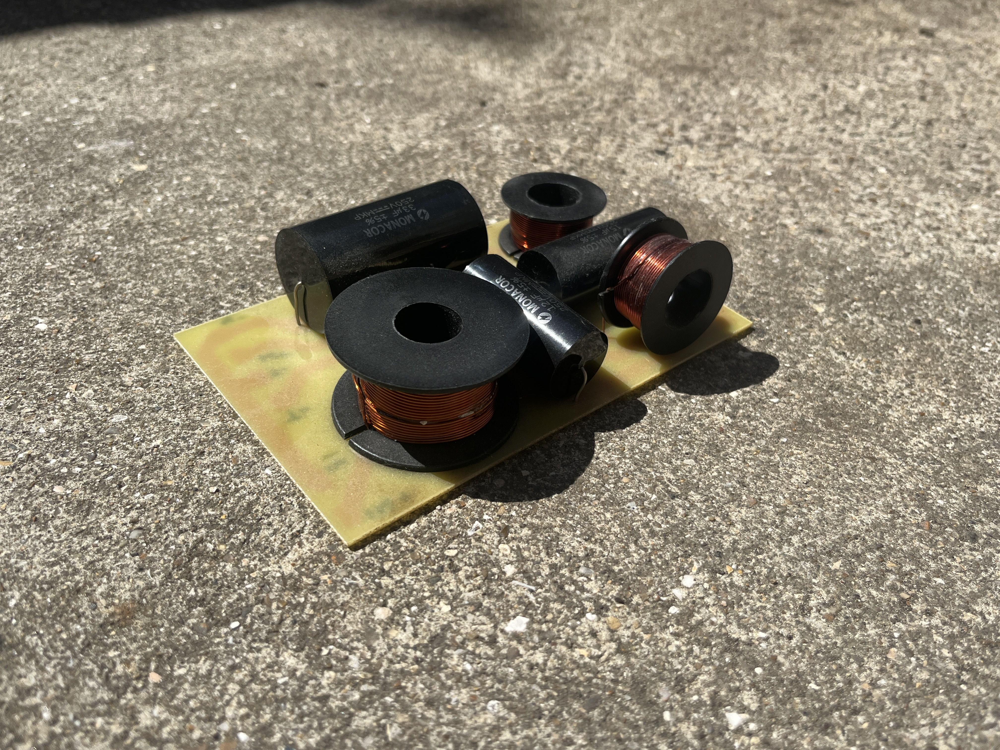
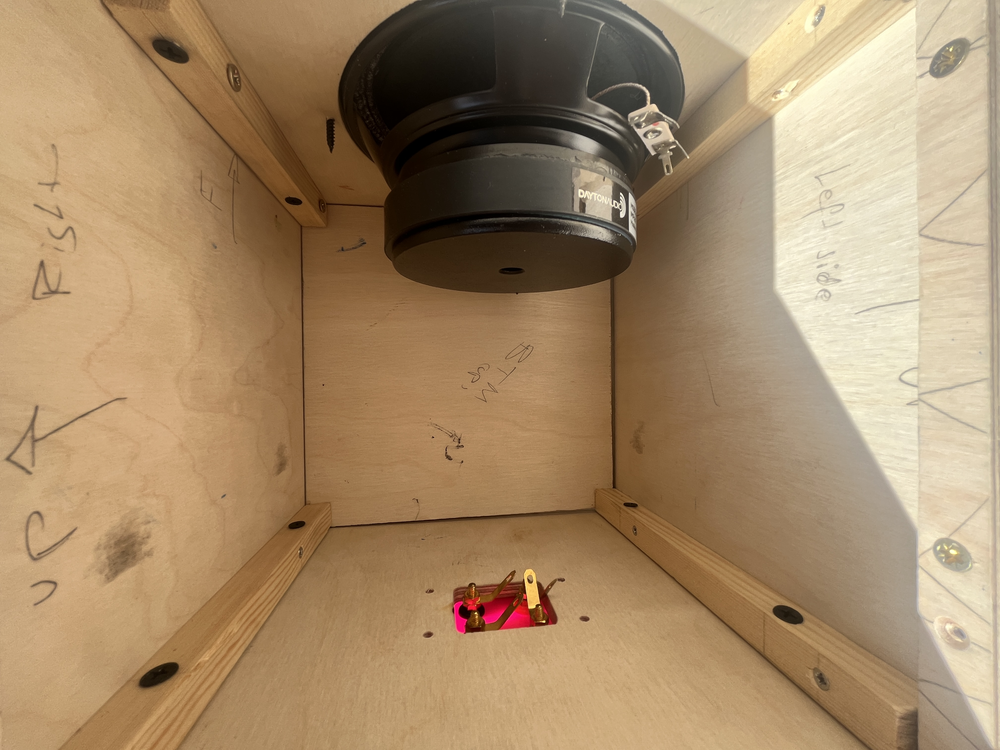
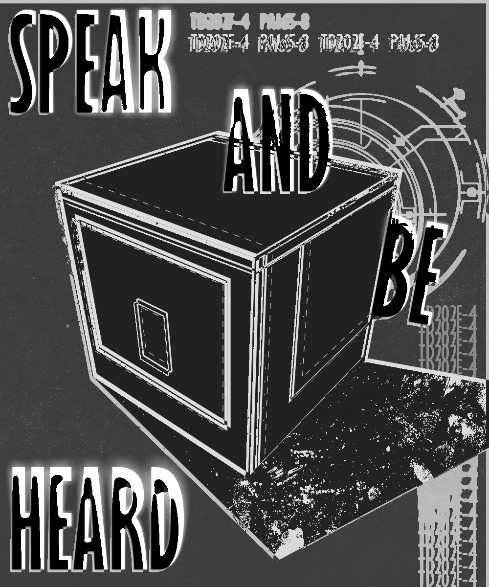

GRIDLOCK magazine — covers, design
2026




Studio description goes here — who you are and what you do.
GRIDLOCK magazine — covers, design
2026



ICRADIO — Modulate
Promotional campaign video - 2026
Videography, Editing - Gabe Gourlay

ICRADIO — Green Screen event
Promotional videos - 2026
by Gabe Gourlay, JB
ICRADIO
Designed custom typographies for ICRadio.
Welcome flyers and stickers.



ICRADIO
Designed custom typographies for ICRadio.
Sticker pack.

2WAY speaker design — Gabe Gourlay
9"x9"x9"
CAD, KiCAD, Adobe




Music and Video - Sharrow, SO
Video - s.video
Music - Gabe Gourlay, SO